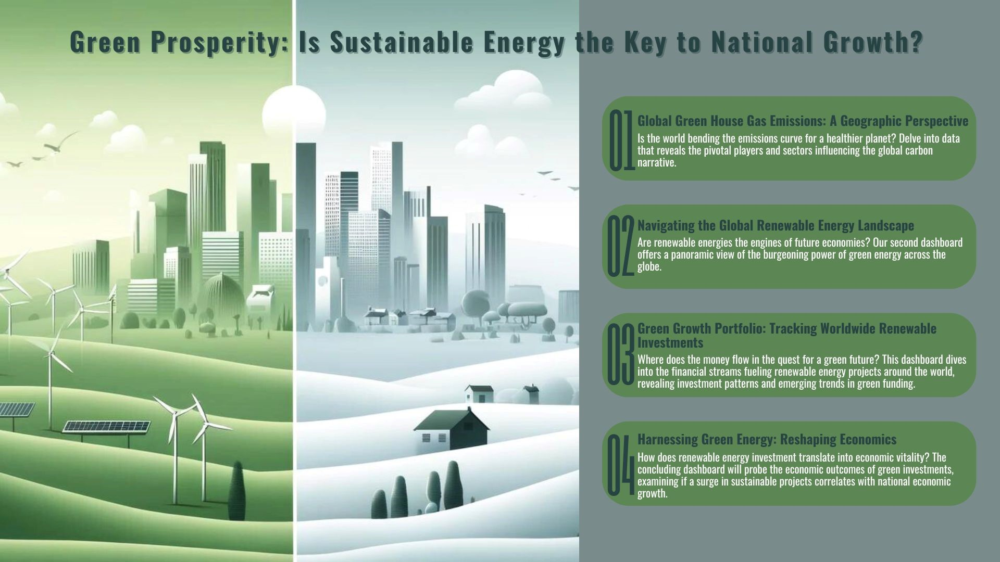
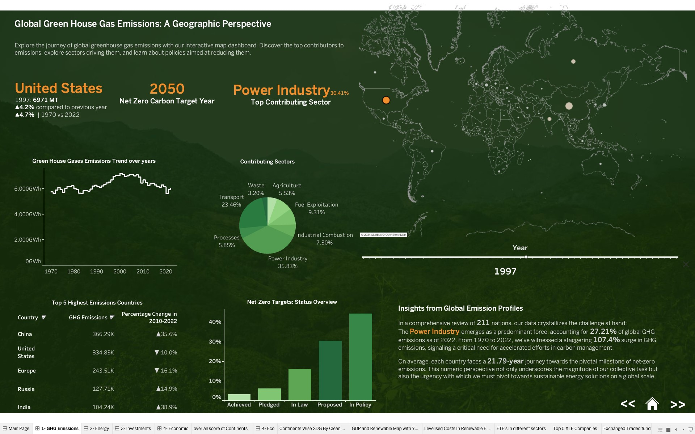
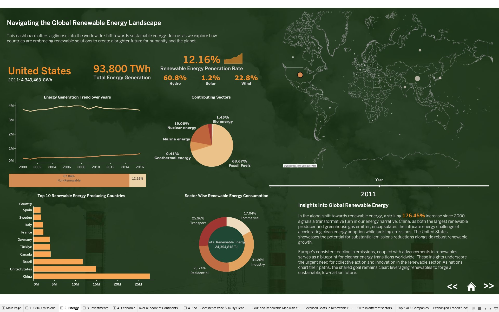
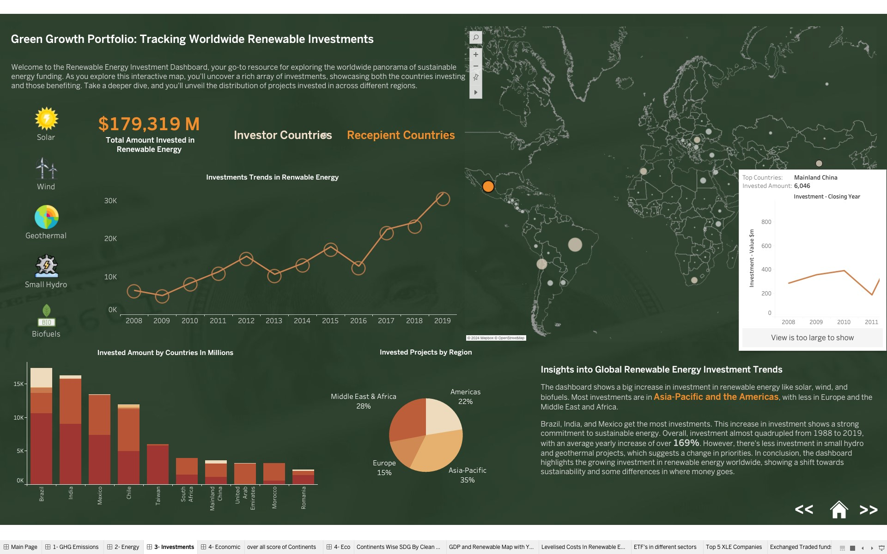
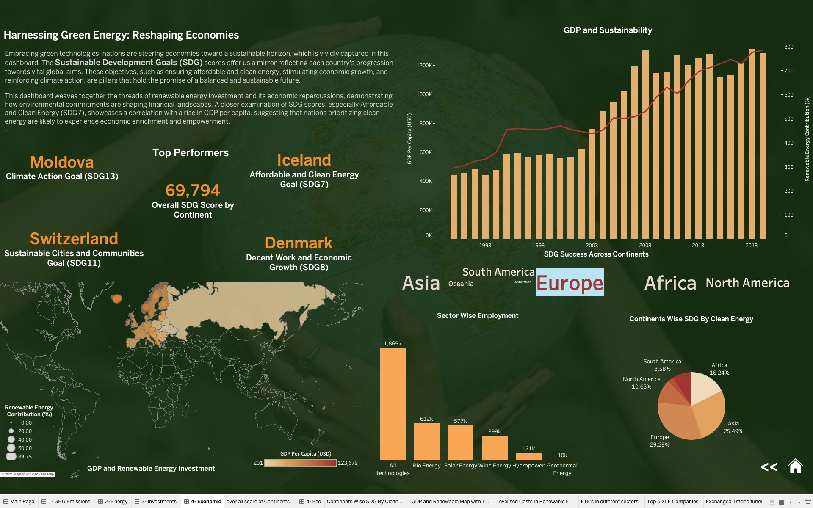

Dashboard on Green Prosperity: Is Sustainable Energy the Key to National Growth?
Course : IST 737 Visual Analytics Dashboard (Spring 2024)
Instructor : Prof. Raj Dewan

Achievement
Utilizing the dashboard to enhance our storytelling has proven to be incredibly valuable, and it was showcased at the school's poster day. This presentation reinforced the idea that a proficient data professional is, at their core, a skilled storyteller—a concept we truly experienced firsthand.
Project Goals
The Green Prosperity initiative presents a comprehensive exploration of the global transition toward sustainable energy and its impact on national growth. Through a series of interconnected dashboards, this project delves into the intricate dynamics of renewable energy adoption, investment trends, and the economic ramifications of embracing green technologies. Each dashboard provides unique insights, ranging from global greenhouse gas emissions to renewable energy investment trends, culminating in a holistic understanding of the interplay between environmental sustainability and economic prosperity.
Tools
Actionable Insights
-
Global Greenhouse Gas Emissions: A Geographic Perspective
This dashboard provides a geographical overview of global greenhouse gas emissions, highlighting the predominant role of the power industry in contributing to emissions. It underscores the urgent need for accelerated efforts in carbon management and emphasizes the collective journey toward achieving net-zero emissions.

-
Navigating the Global Renewable Energy Landscape:
Through this dashboard, users explore the worldwide shift towards renewable energy sources. It showcases the remarkable increase in renewable energy adoption since 2000 and examines the varying approaches taken by nations, with examples such as China, the United States, and Europe, offering insights into the challenges and opportunities in transitioning to cleaner energy sources.

-
Green Growth Portfolio: Tracking Worldwide Renewable Investments
This dashboard offers a detailed analysis of global renewable energy investment trends, highlighting the significant increase in investments in renewable technologies like solar, wind, and biofuels. It showcases regional disparities in investment distribution and emphasizes the growing commitment towards sustainable energy solutions worldwide.

-
Harnessing Green Energy: Reshaping Economies:
Focusing on the economic repercussions of embracing green technologies, this dashboard integrates Sustainable Development Goals (SDG) scores with renewable energy investment data. It illustrates the correlation between clean energy prioritization and economic growth, emphasizing how investments in renewable energy not only benefit the environment but also stimulate vibrant economies and job markets.

My Contribution
We divided the tasks among team members, with each person responsible for creating a dashboard. I developed the "Green Growth Portfolio" dashboard, which highlights the significant increase in investments in renewable technologies such as solar, wind, and biofuels.
Learning Outcomes Demostrated
At one point, we faced challenges in finding relevant data to support our narrative. To overcome this, we sourced data from various platforms, cleaned it, merged it, and aligned it according to our storyline. This process required thorough analysis of each dataset and extensive exploratory data analysis before finalizing the dashboard.